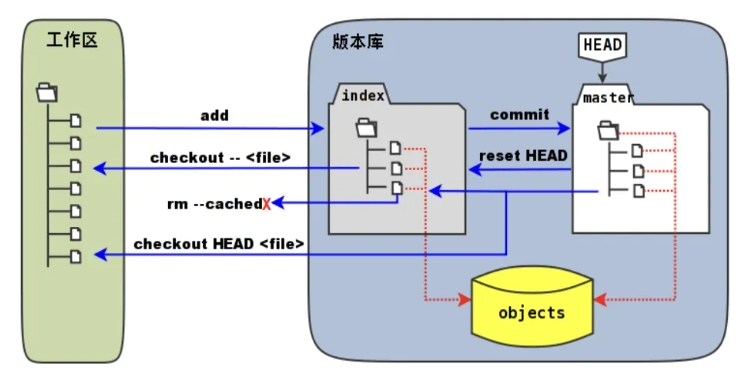
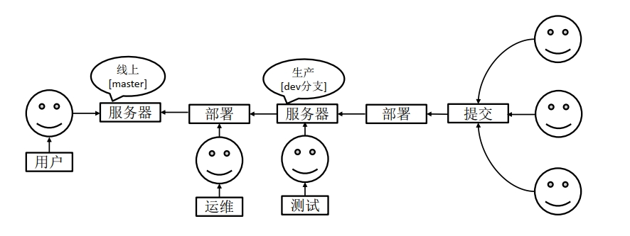
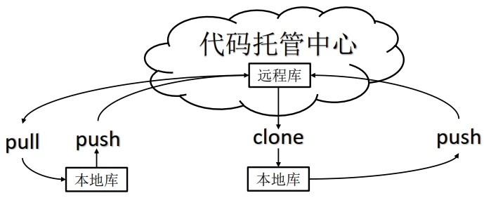
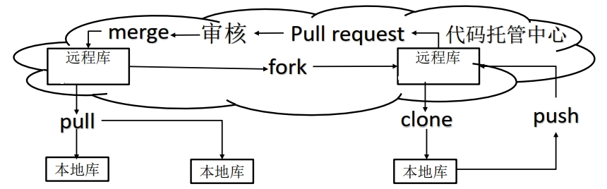

Git的介绍 Git是一个免费的、开源的分布式的版本控制工具，可以快速高效地处理从小型到大型的各种项目。版本控制是一种记录文件内容变化，以便将来查阅特定版本修订情况的系统。版本控制其实最重要的是可以记录文件修改历史记录，从而让用户能够查看历史版本，方便版本切换。Git 这种分布式版本控制工具，客户端提取的不是最新版本的文件快照，而是把代码仓库完整地镜像下来（本地库）。这样任何一处协同工作用的文件发生故障，事后都可以用其他客户端的本地仓库进行恢复。因为每个客户端的每一次文件提取操作，实际上都是一次对整个文件仓库的完整备份。
Git的工作机制 
工作区(workspace)：本地电脑存放项目的地方，自己写代码，改代码的地方
暂存区(Stage/Index)：暂时存放代码的地方，一般存放在.git目录下的inde文件（.git/index）中，而.git隐藏目录被称为git版本库。通过使用git add命令将工作区的内容放到暂存区。
本地仓库(Respository)：存放代码的本地仓库，可以使用git commit命令可以将暂存区中的内容添加到本地仓库，将会生成历史版本 ，无法删除 。
远程仓库(Remote)：基于网络服务器的远程代码仓库，可以将项目托管到远程库，比如基于局域网的Gitlab 和基于互联网的Github 和Gitee ，团队之间可以通过远程仓库相互进行同步开发。使用git push将本地库推送到远程仓库。
Git的安装和绑定 可以参考：github加hexo搭建个人博客（一）
Git版本控制 Git常用命令
命令名
描述
git config --global user.name username设置用户名
git config --global user.email useremail设置用户邮箱
git init初始化本地库
git status查看本地库状态
git add filename添加文件到暂存区
git commit -m "version_information" filename提交到本地库
git reflog查看历史记录
git log查看完整的历史记录
git reset --hard version_number版本穿梭
设置用户签名 git config --global user.name username git config --global user.email useremail
设置完成可以看到配置文件C:\Users\windows_username\.gitconfig，设置用户签名的作用是区分不同操作者身份。用户的签名信息在每一个版本的提交信息中能够看到，以此确认本次提交是谁做的。 Git首次安装必须设置一下用户签名，否则无法提交代码 。这里设置的用户签名和将来登录 GitHub（或其他代码托管中心）的账号没有任何关系。
初始化目录 让Git获取目录的管理权，使用git init
$ git init Initialized empty Git repository in H:/Git_space/git_demo/.git/
会生成.git文件夹。
$ ls -a -l total 0 drwxr-xr-x 1 Administrator 197121 0 Apr 18 22:35 ./ drwxr-xr-x 1 Administrator 197121 0 Apr 18 22:34 ../ drwxr-xr-x 1 Administrator 197121 0 Apr 18 22:35 .git/
查看状态 使用git status 查看状态
$ git status On branch master No commits yet nothing to commit (create/copy files and use "git add" to track)
vim hello_world.txt hello world！ hello world！ hello world！ hello world！ $ git status On branch master No commits yet Untracked files: (use "git add <file>..." to include in what will be committed) hello_world.txt nothing added to commit but untracked files present (use "git add" to track)
添加暂存区 使用git add filename 添加暂存区，添加暂存区的文件可以通过git rm --cached filename从暂存区删除。
$ git add hello_world.txt warning: in the working copy of 'hello_world.txt' , LF will be replaced by CRLF the next time Git touches it $ git status On branch master No commits yet Changes to be committed: (use "git rm --cached <file>..." to unstage) new file: hello_world.txt $ git rm --cached hello_world.txt rm 'hello_world.txt' $ ls hello_world.txt $ git add hello_world.txt warning: in the working copy of 'hello_world.txt' , LF will be replaced by CRLF the next time Git touches it $ git status On branch master No commits yet Changes to be committed: (use "git rm --cached <file>..." to unstage) new file: hello_world.txt
提交本地库 通过git commit -m "version_information" filename命令提交本地库，git reflog查看版本信息，git log查看详细信息
$ git commit -m "first commit" hello_world.txt warning: in the working copy of 'hello_world.txt' , LF will be replaced by CRLF the next time Git touches it [master (root-commit) e0e3831] first commit 1 file changed, 23 insertions(+) create mode 100644 hello_world.txt $ git status On branch master nothing to commit, working tree clean $ git reflog e0e3831 (HEAD -> master) HEAD@{0}: commit (initial): first commit $ git log commit e0e3831c76b2aa208de6bf469edb901e8249ca2f (HEAD -> master) Author: username <xxxxxxxxxx@qq.com> Date: Fri Apr 19 14:50:41 2024 +0800 first commit
修改文件 修改文件后，用git status查看，提示文件被修改，之后可以重新提交暂存区，提交本地库，可以看到这时存在两个版本，指针目前指向第二个版本。
echo "22222!" >> hello_world.txt$ git status On branch master Changes not staged for commit: (use "git add <file>..." to update what will be committed) (use "git restore <file>..." to discard changes in working directory) modified: hello_world.txt no changes added to commit (use "git add" and/or "git commit -a" ) $ git add hello_world.txt warning: in the working copy of 'hello_world.txt' , LF will be replaced by CRLF the next time Git touches it $ git status On branch master Changes to be committed: (use "git restore --staged <file>..." to unstage) modified: hello_world.txt $ git commit -m "second commit" hello_world.txt warning: in the working copy of 'hello_world.txt' , LF will be replaced by CRLF the next time Git touches it [master d070ae2] second commit 1 file changed, 1 insertion(+), 1 deletion(-) $ git reflog d070ae2 (HEAD -> master) HEAD@{0}: commit: second commit e0e3831 HEAD@{1}: commit (initial): first commit $ git log commit d070ae21dc05b4ef9374310e27e253df6515238c (HEAD -> master) Author: username <xxxxxxxxxx@qq.com> Date: Fri Apr 19 15:01:28 2024 +0800 second commit commit e0e3831c76b2aa208de6bf469edb901e8249ca2f Author: username <xxxxxxxxxx@qq.com> Date: Fri Apr 19 14:50:41 2024 +0800 first commit
版本穿梭 使用git reset --hard version_number穿越版本，实现版本的替换，如下当前指针由之前指向版本3，现在指向版本2
$ git reset --hard d070ae2 HEAD is now at d070ae2 second commit $ git reflog d070ae2 (HEAD -> master) HEAD@{0}: reset: moving to d070ae2 21f9567 HEAD@{1}: commit: third commit d070ae2 (HEAD -> master) HEAD@{2}: commit: second commit e0e3831 HEAD@{3}: commit (initial): first commit
Git切换版本， 底层其实是移动的HEAD指针。
Git分支操作 分支的基本概念 
分支的好处 同时并行推进多个功能开发，提高开发效率。各个分支在开发过程中，如果某一个分支开发失败，不会对其他分支有任何影响。失败的分支删除重新开始即可。
分支的相关操作
命令名
描述
git branch branch_name创建分支
git branch -v查看分支
git checkout branch_name切换分支
git merge branch_name把指定分支合并到当前分支
查看分支 使用git branch -v查看分支
$ git branch -v * master 21f9567 third commit
创建分支 使用git branch branch_name创建分支
切换分支 当创建分支之后，依然在之前的分支，使用git checkout branch_name可以切换分支
$ git checkout hot_fix Switched to branch 'hot_fix' $ git branch -v * hot_fix 21f9567 third commit master 21f9567 third commit
在新分支里修改文件 修改后，提交暂存区，提交本地库
$ git commit -m "hot_fix first commit" hello_world.txt [hot_fix 7449dbe] hot_fix first commit 1 file changed, 2 insertions(+), 2 deletions(-) $ git reflog 7449dbe (HEAD -> hot_fix) HEAD@{0}: commit: hot_fix first commit 21f9567 (master) HEAD@{1}: checkout: moving from master to hot_fix 21f9567 (master) HEAD@{2}: reset: moving to 21f9567 d070ae2 HEAD@{3}: reset: moving to d070ae2 e0e3831 HEAD@{4}: reset: moving to e0e3831 d070ae2 HEAD@{5}: reset: moving to d070ae2 21f9567 (master) HEAD@{6}: commit: third commit d070ae2 HEAD@{7}: commit: second commit e0e3831 HEAD@{8}: commit (initial): first commit $ git checkout master Switched to branch 'master'
合并分支 使用git merge branch_name，把指定分支合并到当前分支
$ git merge hot_fix Updating 21f9567..7449dbe Fast-forward hello_world.txt | 4 ++-- 1 file changed, 2 insertions(+), 2 deletions(-)
分支合并冲突 合并分支时，两个分支在同一个文件的同一个位置 有两套完全不同的修改。 Git无法替人为决定 新代码内容。<<<<<<< HEAD和=======之间表示当前分支修改后的代码，=======和>>>>>>> hot_fix之间表示合并分支的代码。
$ git merge hot_fix Auto-merging hello_world.txt CONFLICT (content): Merge conflict in hello_world.txt Automatic merge failed; fix conflicts and then commit the result. $ cat hello_world.txt hello world ! hello world ! hello world ! hello world ! <<<<<<< HEAD hello world !master test ### hello world ! ======= hello world ! hello world ! hot_fix test >>>>>>> hot_fix 22!
这种情况需要手动合并代码，也就是说打开文件，将需要保留的部分保留，删除不要的部分，同时删除特殊符号。
$ cat hello_world.txt hello world ! hello world ! hello world ! hello world ! hello world !master test ### hello world ! hot_fix test 22!
然后提交暂存区
然后提交本地库，注意这个时候不要带文件名 ，即git commit -m "version_information"。否则会报错。这样只会修改当前分支，合并分支不会修改。
$ git commit -m "merge test" hello_world.txt fatal: cannot do a partial commit during a merge. $ git commit -m "merge test" [master b7037dd] merge test
分支的原理 master、 hot_fix 其实都是指向具体版本记录的指针。当前所在的分支，其实是由HEAD
Git团队协作机制 团队内协作 push到远程库，即代码托管中心。开发者B可以用clone命令从远程库完成克隆到自己的本地库，开发者B修改后也可以通过push命令提交到远程库，该过程需要开发者A把开发者B拉进项目团队中。之后，开发者A可以用pull命令拉取代码并更新自己的本地库。这样开发者A，开发者B，远程库的代码就是一样的了。
跨团队内协作 push到远程库A，然后开发者C从远程库A，通过fork命令，将远程库A的内容复制到自己的远程库C，然后开发者C通过clone命令，复制远程库C到本地库，修改后push命令提交到远程库C，然后发起请求即pull request给开发者A，开发者A需要审核，审核完成后通过merge命令将远程库A的代码和远程库C的合并，然后通过pull命令，复制代码到本地库。
GitHub的远程库的操作
命令名
描述
git remote -v查看当前所有远程地址别名
git remote add 别名 远程库为远程库起别名
git push 远程库 branch_name推送本地分支上的内容到远程仓库
git clone 远程库将远程仓库的内容克隆到本地
git pull 远程库地址别名 远程分支名将远程仓库的分支的最新内容拉下来后与
当前本地分支直接合并
GitHub创建远程库时和本地库最好同名
创建远程仓库别名 使用git remote -v查看当前远程地址的别名，使用git remote add 别名 远程库为远程库创建别名，创建别名的目的主要是远程库的链接太长了，不好记，用别名好记一点。
$ git remote -v $ git remote add git_demo xxxxx/git_demo.git $ git remote -v git_demo xxxxx/git_demo.git (fetch) git_demo xxxxx/git_demo.git (push)
本地库推送到远程库 使用git push 远程库 branch_name从本地库推送到远程库
$ git push git_demo master Enumerating objects: 21, done . Counting objects: 100% (21/21), done . Delta compression using up to 12 threads Compressing objects: 100% (14/14), done . Writing objects: 100% (21/21), 1.60 KiB | 1.60 MiB/s, done . Total 21 (delta 6), reused 0 (delta 0), pack-reused 0 (from 0) remote: Resolving deltas: 100% (6/6), done . remote: remote: Create a pull request for 'master' on GitHub by visiting: remote: xxxxx/git_demo/pull/new/master remote: To xxxxx/git_demo.git * [new branch] master -> master
拉取远程库到本地库 使用git pull 远程库地址别名 远程分支名命令，拉取远程库到本地库，拉取完成后，会在本地生成新的版本
$ git pull git_demo master remote: Enumerating objects: 5, done . remote: Counting objects: 100% (5/5), done . remote: Compressing objects: 100% (2/2), done . remote: Total 3 (delta 1), reused 0 (delta 0), pack-reused 0 Unpacking objects: 100% (3/3), 922 bytes | 11.00 KiB/s, done . From xxxxx/git_demo * branch master -> FETCH_HEAD b7037dd..ee5c0ae master -> git_demo/master Updating b7037dd..ee5c0ae Fast-forward hello_world.txt | 1 + 1 file changed, 1 insertion(+) $ git branch -v hot_fix bc90528 hot_fix test * master ee5c0ae hahahaha
克隆到本地库 使用git clone 远程库命令，将远程库克隆到本地库，克隆会帮我们，拉取代码，并初始化本地仓库，同时创建别名
$ git clone xxxxx/git_demo.git Cloning into 'git_demo' ... remote: Enumerating objects: 27, done . remote: Counting objects: 100% (27/27), done . remote: Compressing objects: 100% (11/11), done . remote: Total 27 (delta 7), reused 20 (delta 6), pack-reused 0 Receiving objects: 100% (27/27), done . Resolving deltas: 100% (7/7), done . $ ll total 0 drwxr-xr-x 1 Administrator 197121 0 Apr 19 20:04 git_demo/ $ git remote -v origin xxxxx/git_demo.git (fetch) origin xxxxx/git_demo.git (push) $ git reflog 3406486 (HEAD -> main, origin/main, origin/HEAD) HEAD@{0}: clone : xxxxx/git_demo.git
团队内协作操作 开发者B将远程库clone到本地，修改后无法直接提交到远程库，必须要开发者A将开发者B纳入团队才可以，操作可以参考：尚硅谷_Git_Github_团队内协作
跨团队协作操作 开发者C从远程库A，通过fork命令，将远程库A的内容复制到自己的远程库C，然后开发者C通过clone命令，复制远程库C到本地库，修改后push命令提交到远程库C，然后发起请求即pull request给开发者A，开发者A需要审核，审核完成后通过merge命令将远程库A的代码和远程库C的合并，然后通过pull命令，复制代码到本地库。操作可以参考：尚硅谷_Git_Github_跨团队协作
SSH免密登录 SSH免密登录可以参考：github加hexo搭建个人博客（一）
Git的常用命令 搬运于阮一峰老师的博文：常用 Git 命令清单
新建代码库 $ git init $ git init [project-name] $ git clone [url]
配置信息 $ git config --list $ git config -e [--global] $ git config [--global] user.name "[name]" $ git config [--global] user.email "[email address]"
增加/删除文件 $ git add [file1] [file2] ... $ git add [dir ] $ git add . $ git add -p $ git rm [file1] [file2] ... $ git rm --cached [file] $ git mv [file-original] [file-renamed]
代码提交 $ git commit -m [message] $ git commit [file1] [file2] ... -m [message] $ git commit -a $ git commit -v $ git commit --amend -m [message] $ git commit --amend [file1] [file2] ...
分支操作 $ git branch $ git branch -r $ git branch -a $ git branch [branch-name] $ git checkout -b [branch] $ git branch [branch] [commit] $ git branch --track [branch] [remote-branch] $ git checkout [branch-name] $ git checkout - $ git branch --set-upstream [branch] [remote-branch] $ git merge [branch] $ git cherry-pick [commit] $ git branch -d [branch-name] $ git push origin --delete [branch-name] $ git branch -dr [remote/branch]
标签信息 $ git tag $ git tag [tag] $ git tag [tag] [commit] $ git tag -d [tag] $ git push origin :refs/tags/[tagName] $ git show [tag] $ git push [remote] [tag] $ git push [remote] --tags $ git checkout -b [branch] [tag]
查看信息 $ git status $ git log $ git log --stat $ git log -S [keyword] $ git log [tag] HEAD --pretty=format:%s $ git log [tag] HEAD --grep feature $ git log --follow [file] $ git whatchanged [file] $ git log -p [file] $ git log -5 --pretty --oneline $ git shortlog -sn $ git blame [file] $ git diff $ git diff --cached [file] $ git diff HEAD $ git diff [first-branch]...[second-branch] $ git diff --shortstat "@{0 day ago}" $ git show [commit] $ git show --name-only [commit] $ git show [commit]:[filename] $ git reflog
远程同步 $ git fetch [remote] $ git remote -v $ git remote show [remote] $ git remote add [shortname] [url] $ git pull [remote] [branch] $ git push [remote] [branch] $ git push [remote] --force $ git push [remote] --all
撤销操作 $ git checkout [file] $ git checkout [commit] [file] $ git checkout . $ git reset [file] $ git reset --hard $ git reset [commit] $ git reset --hard [commit] $ git reset --keep [commit] $ git revert [commit] $ git stash $ git stash pop
其他操作 参考